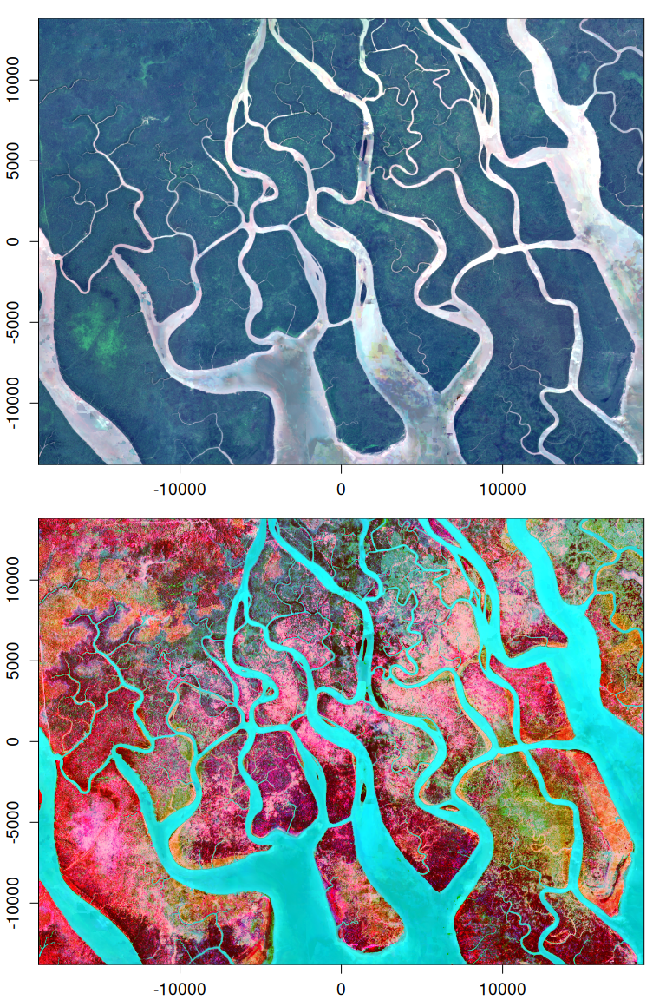
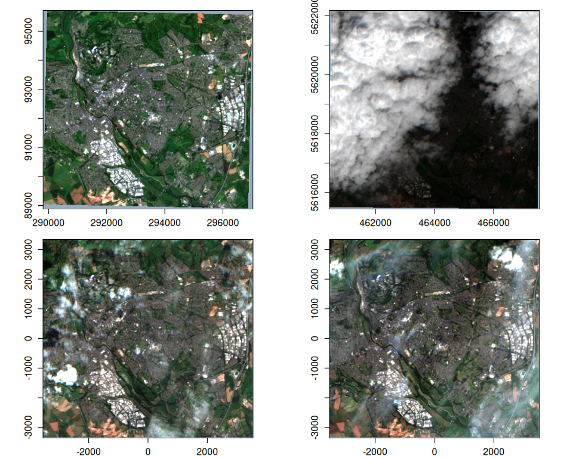
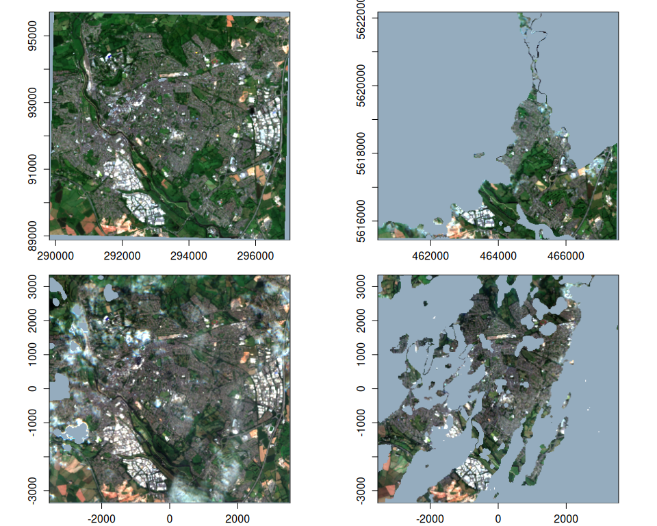

vrtility is an R package that makes efficient use of GDAL’s VRT (Virtual Raster) capabilities for processing large raster datasets, with a focus on Earth Observation (EO) applications. The package leverages VRT pixel functions and harnesses the VRT data structure to facilitate complex image processing tasks such as multi-band compositing and time series filtering.
[!NOTE] This package is under active development and is likely to change. Contributions and suggestions are still very welcome!
Features
Modular design: Creates remote sensing pipelines using nested VRTs, allowing easy addition of new pixel and masking functions. Can be adapted for deriving spectral indices or calculating complex time series functions. All powered by {gdalraster}.
Python and C++ pixel functions: Enables use of both GDAL VRT Python and built-in (C++) pixel functions. Python numpy-based pixel functions can apply cloud masks and summarize pixel values (e.g., median) from multiple images to create composite images. Python environment and package management is handled by {reticulate}. Built-in GDAL pixel functions are highly performant and vary by GDAL version—recent versions support muparser expressions (3.11.4+) and median compositing (3.12.0+), for example.
Efficient parallel processing: Uses {mirai} for asynchronous, multi-core processing.
Advanced multi-band compositing methods: Maintain spectral consistency using methods such as the geometric median and medoid.
Time series filtering: Improve temporal consistency and reduce noise in multi-temporal datasets.
Cloud masking: Apply cloud mask filtering using pixel functions, including support for OmniCloudMask cloud/shadow masking embedded within VRT pipelines.
Installation
You can install vrtility from GitHub with:
# install.packages("pak")
pak::pkg_install("Permian-Global-Research/vrtility")Example
This example demonstrates the creation of a cloud-masked median composite from Sentinel-2 data:
Define a bounding box and search a STAC catalog for Sentinel-2 data.
Create a
vrt_collectionobject — a list of individual VRTs (referred to asvrt_blocks), with each representing one image.Apply cloud masking using pixel functions, which modifies the XML of each VRT block.
Warp the
vrt_blocks to a common spatial reference system (SRS) usingvrt_warp, creating a spatially-alignedvrt_collection_warpedobject. Note: For remote data sources, warping withlazy = FALSE(the default) forces GDAL to materialize the warped VRTs immediately, which is typically much faster.Stack the images (combine into a single VRT with multiple layers per band), creating a
vrt_stackobject.Add a median pixel function to the
vrt_stack.Compute the median composite using
vrt_computewith thegdalrasterengine, which processes the data in parallel across bands and image blocks using mirai daemons.
library(vrtility)
#> ✔ Using GDAL version 3.12.0
#> ℹ GDAL_CACHEMAX set to 6.247 GiB; to change this use
#> vrtility::set_gdal_cache_max()
# Set up asynchronous workers to parallelise vrt_collect and vrt_set_maskfun
mirai::daemons(8)
daemons_load_vrtility()
bbox <- gdalraster::bbox_from_wkt(
wkt = "POINT (144.3 -7.6)",
extend_x = 0.17,
extend_y = 0.125
)
te <- bbox_to_projected(bbox)
trs <- attr(te, "wkt")
s2_stac <- hls_stac_query(
bbox = bbox,
start_date = "2023-01-01",
end_date = "2023-12-31",
stac_source = "https://planetarycomputer.microsoft.com/api/stac/v1/",
collection = "hls2-s30",
max_cloud_cover = 40,
assets = c("B02", "B03", "B04", "Fmask")
)
# number of items:
length(s2_stac$features)
#> [1] 10
system.time({
median_composite <- vrt_collect(s2_stac) |>
vrt_set_maskfun(
mask_band = "Fmask",
mask_values = c(0, 1, 2, 3),
build_mask_pixfun = build_bitmask()
) |>
vrt_warp(t_srs = trs, te = te, tr = c(30, 30)) |>
vrt_stack() |>
vrt_set_py_pixelfun(pixfun = median_numpy()) |>
# vrt_set_gdal_pixelfun(pixfun = "median") # if using GDAL >= 3.12.0
vrt_compute(
engine = "gdalraster"
)
})
#> user system elapsed
#> 1.140 0.133 5.843
plot_raster_src(
median_composite,
c(3, 2, 1)
)
Asynchronous download/processing
vrtility uses {mirai} to manage asynchronous parallel processing. Set mirai::daemons(n) before running VRT pipelines to improve performance, particularly when working with remote data sources.
Direct file access for on-disk or remote rasters
vrtility can directly access local raster files or remote URLs. The example below demonstrates this with a sample dataset. Note that inputs with multiple spatial reference systems must be warped (as in the previous example) before stacking or applying reduction functions.
This example creates a medoid composite from the warped collection. Multi-band pixel functions like medoid and geometric median (geomedian) are extremely powerful for maintaining spectral consistency but require more computation than band-wise functions (using mirai daemons here is recommended).
s2files <- fs::dir_ls(system.file("s2-data", package = "vrtility"))[1:4]
ex_collect <- vrt_collect(s2files)
ex_collect_mask <- vrt_set_maskfun(
ex_collect,
mask_band = "SCL",
mask_values = c(0, 1, 2, 3, 8, 9, 10, 11),
)
par(mfrow = c(2, 2))
purrr::walk(
seq_len(ex_collect$n_items),
~ plot(ex_collect, item = .x, bands = c(3, 2, 1))
)
purrr::walk(
seq_len(ex_collect_mask$n_items),
~ plot(ex_collect_mask, item = .x, bands = c(3, 2, 1))
)
# extract a block to use as a template for warping
t_block <- ex_collect$vrt[[1]]
ex_composite <- vrt_warp(
ex_collect_mask,
t_srs = t_block$srs,
te = t_block$bbox,
tr = c(20, 20)
) |>
vrt_set_scale(scale_value = 0.0001, offset = -0.1, band_idx = 1:4) |>
multiband_reduce(reduce_fun = medoid())
purrr::walk(
1:4,
~ plot_raster_src(ex_composite, bands = .x, minmax_pct_cut = c(2, 98))
)